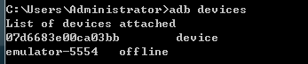

android 模擬器
sdk中提供了 android 模擬器(AVD) 可以模擬 各種 硬件設備
不過效率極低 建議使用 真機 調試
sdk 命令
//顯示 虛擬/真實 設備 的 設備名 與adb連接狀態
adb devices

device 已經連接到 adb服務器
offline 未連接到 adb服務器
//當存在多個設備時 使用指定設備 執行 adb命令
adb -s <設備名> <命令>
//安裝應用
adb install <apk_path>
adb -s 07d6683e00ca03bb install DarkTest.apk
//複製文件
adb push <local> <remote>
adb pull <remote> <local>
//進入shell
adb shell